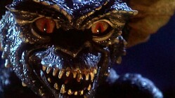

Los Gremlins

Los Gremlins es una película estadounidense de comedia-terror del año 1984 dirigida por Joe Dante, escrita por Chris Columbus y protagonizada por Zach Galligan y Phoebe Cates.
Fue producida por Michael Finnell, mientras que Kathleen Kennedy, Frank Marshall y Steven Spielberg fueron los productores ejecutivos.
La productora Amblin –que acababa de realizar E.T., el extraterrestre– fue la encargada de realizar la película.
Banda Sonora
La Banda sonora de Los Gremlins es uno de los puntos fuertes de la pelicula, escrita en su mayoria por Jerry Goldsmith, reputadisimo director de bandas sonoras con un oscar a la mejor
BSO por su trabajo en La Profecia(1976) asi como mas de 10 nominaciones al mismo, especializado en peliculas de fantasia como Star Treck, Alien el octavo pasajero o El planeta de los Simios,
ademas la banda sonora cuenta con la colaboracion de otros artistas como Muchael Sembello y QuarterFlash
Pistas
| Autor | Titulo | Duración |
| Michael Sembello | Gremlins... Mega Madness | 3:50 |
| Quarterflash | Make It Shine | 4:10 |
| Jerry Goldsmith | Out Out | 7:00 |
| Jerry Goldsmith | The Gift | 4:51 |
| Jerry Goldsmith | Gizmo | 4:09 |
| Jerry Goldsmith | Mrs. Deagle | 2:50 |
| Jerry Goldsmith | The Gremlin Rag | 4:03 |